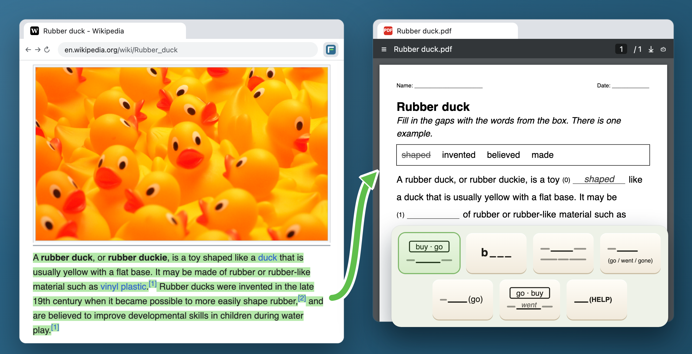
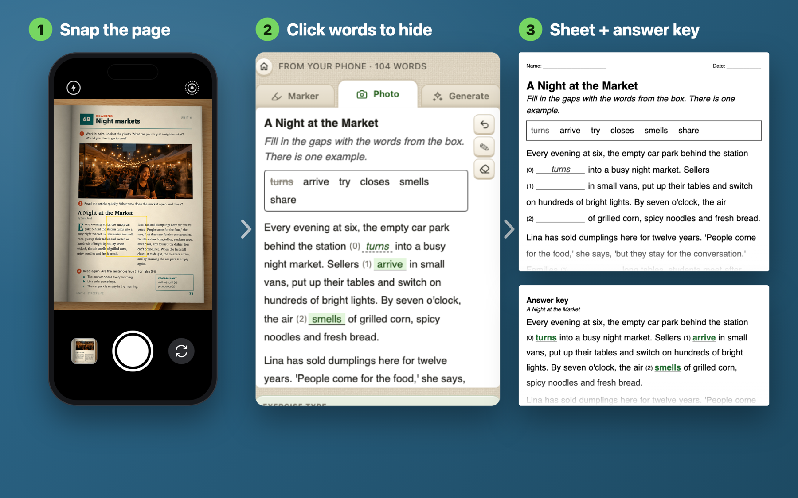
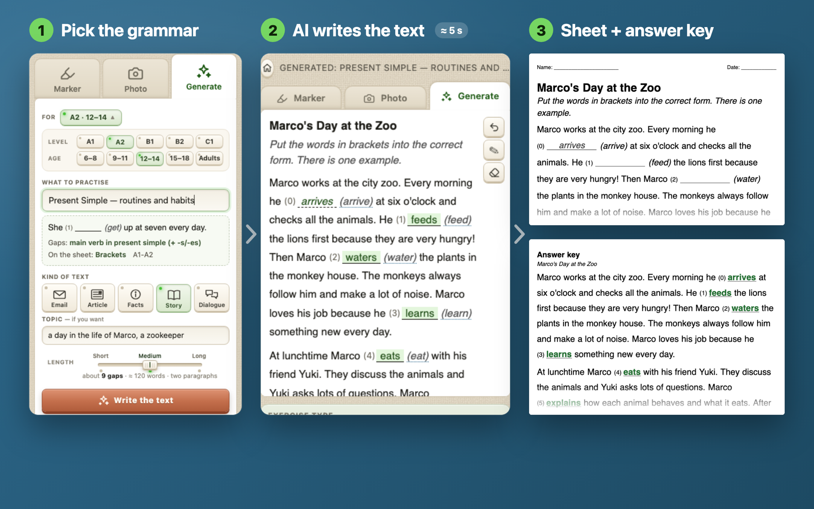
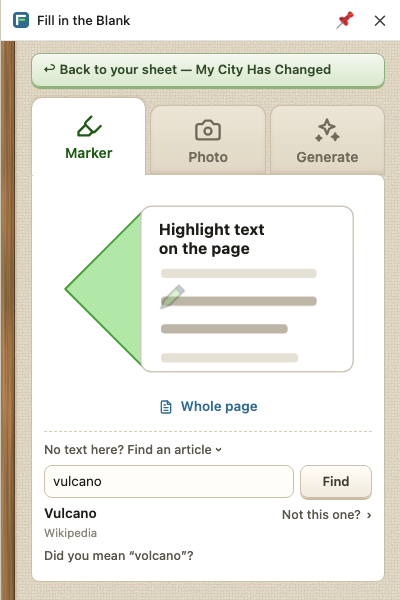
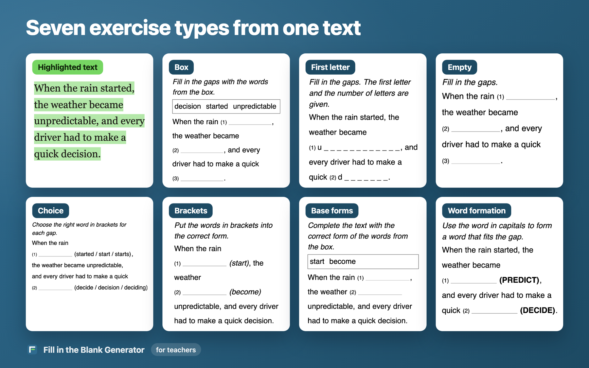
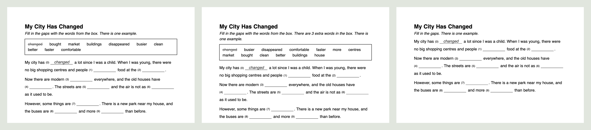

← Ко всем работам
Fill in the Blank Generator
в деле
Расширение Chrome для учителя английского. Выделяешь текст на любой странице и получаешь лист
с пропусками и ключом.

Настоящая страница Википедии и лист, который расширение из неё сделало.
Установить в Chrome ↗
Ещё три входа
Фото страницы учебника. Снимаешь телефоном, щёлкаешь слова, которые спрятать, получаешь лист и ключ.

Текст под урок. Выбираешь уровень, возраст и что тренировать. Текст пишется секунд за пять.

Текста под рукой нет. Пишешь тему, и расширение находит статью на сайтах со свободной лицензией.

Семь видов упражнений

В четырёх ученик находит слово, в трёх — меняет его форму.
Три уровня одного текста

Для разноуровневого класса: рамка слов, рамка с тремя лишними словами, без рамки.
Лист и ключ уходят в PDF, Word, Google Docs или сразу на принтер.
Установить в Chrome ↗
Как устроено
Формы словсловарь начальных форм из открытого списка слов: «went» — это «go», и в скобки встаёт «(go)»внутри расширения
ИИтолько чтобы прочитать фото и написать текст, через мой сервер с дневным лимитом тратостальное — правила
ПоискSimple Wikipedia · News in Levels · Wikijunior · Wikinews · Global Voices · Wikivoyage · Wikipediaтолько свободные лицензии
Правачитает страницу только после щелчка по значку, поэтому ставится без предупрежденияважно на школьных компьютерах
Журнал
выпуск
1.0.2: поиск текста по теме.
в деле
Первый лист, скачанный незнакомым учителем: на входе снимок страницы, на выходе PDF.
выпуск
1.0.0 в Chrome Web Store.
методика
Виды упражнений сгруппированы по тому, что делает ученик: находит слово или меняет форму.
начало
Всё началось с одного жеста: выделил маркером, получил лист.